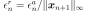
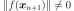
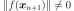

MultiStart¶
- class MultiStart(*args)¶
Multi-start optimization algorithm.
The algorithm runs an optimization solver for multiple starting points and returns the best result of each local search. The algorithm succeeds when at least one local search succeeds.
- Parameters
- solver
OptimizationAlgorithm The internal solver
- startingSample2-d sequence of float
Starting points set
- solver
Notes
A global number of evaluations can be explicitly set, in that case all starting points might not be used depending on the number of evaluations allocated to the internal solver.
The starting point of solver is ignored. If you want to use it, add it to startingSample.
Starting points provided through the startingSample parameter should be within the bounds of the
OptimizationProblem, but this is not checked.Examples
First define the
OptimizationAlgorithmto be run from multiple starting points.>>> import openturns as ot >>> dim = 2 >>> model = ot.SymbolicFunction(['x', 'y'], ['x^2+y^2*(1-x)^3']) >>> bounds = ot.Interval([-2.0] * dim, [3.0] * dim) >>> problem = ot.OptimizationProblem(model) >>> problem.setBounds(bounds) >>> solver = ot.TNC(problem)
Starting points must be manually specified.
>>> uniform = ot.ComposedDistribution([ot.Uniform(-2.0, 3.0)] * dim) >>> ot.RandomGenerator.SetSeed(0) >>> startingSample = uniform.getSample(5) >>> print(startingSample) [ X0 X1 ] 0 : [ 1.14938 2.84712 ] 1 : [ 2.41403 2.6034 ] 2 : [ -1.32362 0.515201 ] 3 : [ -1.83749 -1.68397 ] 4 : [ -0.264715 -0.536216 ] >>> algo = ot.MultiStart(solver, startingSample) >>> algo.run() >>> result = algo.getResult() >>> print(result.getOptimalPoint()) [3,3]
Methods
Accessor to the object's name.
getId()Accessor to the object's id.
Flag to keep intermediate results accessor.
Accessor to maximum allowed absolute error.
Accessor to maximum allowed constraint error.
Accessor to maximum allowed number of evaluations.
Accessor to maximum allowed number of iterations.
Accessor to maximum allowed relative error.
Accessor to maximum allowed residual error.
getName()Accessor to the object's name.
Internal solver accessor.
Accessor to optimization problem.
Accessor to optimization result.
Intermediate optimization results accessor.
Accessor to the object's shadowed id.
Inherited but raises an Exception.
Accessor to the sample of starting points.
Accessor to the verbosity flag.
Accessor to the object's visibility state.
hasName()Test if the object is named.
Test if the object has a distinguishable name.
run()Launch the optimization.
setKeepResults(keepResults)Flag to keep intermediate results accessor.
setMaximumAbsoluteError(maximumAbsoluteError)Accessor to maximum allowed absolute error.
setMaximumConstraintError(maximumConstraintError)Accessor to maximum allowed constraint error.
Accessor to maximum allowed number of evaluations.
setMaximumIterationNumber(maximumIterationNumber)Accessor to maximum allowed number of iterations.
setMaximumRelativeError(maximumRelativeError)Accessor to maximum allowed relative error.
setMaximumResidualError(maximumResidualError)Accessor to maximum allowed residual error.
setName(name)Accessor to the object's name.
setOptimizationAlgorithm(solver)Internal solver accessor.
setProblem(problem)Sets the optimization problem.
setProgressCallback(*args)Set up a progress callback.
setResult(result)Accessor to optimization result.
setShadowedId(id)Accessor to the object's shadowed id.
setStartingPoint(point)Inherited but raises an Exception.
setStartingSample(startingSample)Accessor to the sample of starting points.
setStopCallback(*args)Set up a stop callback.
setVerbose(verbose)Accessor to the verbosity flag.
setVisibility(visible)Accessor to the object's visibility state.
- __init__(*args)¶
- getClassName()¶
Accessor to the object’s name.
- Returns
- class_namestr
The object class name (object.__class__.__name__).
- getId()¶
Accessor to the object’s id.
- Returns
- idint
Internal unique identifier.
- getKeepResults()¶
Flag to keep intermediate results accessor.
- Returns
- keepResultsbool
If True all the intermediate results are stored, otherwise they are ignored. Default value is MultiStart-KeepResults in
ResourceMap
- getMaximumAbsoluteError()¶
Accessor to maximum allowed absolute error.
- Returns
- maximumAbsoluteErrorfloat
Maximum allowed absolute error, where the absolute error is defined by
 where
where  and
and  are two consecutive approximations of the optimum.
are two consecutive approximations of the optimum.
- getMaximumConstraintError()¶
Accessor to maximum allowed constraint error.
- Returns
- maximumConstraintErrorfloat
Maximum allowed constraint error, where the constraint error is defined by
 where is the current approximation of the optimum and
where is the current approximation of the optimum and  is the function that gathers all the equality and inequality constraints (violated values only)
is the function that gathers all the equality and inequality constraints (violated values only)
- getMaximumEvaluationNumber()¶
Accessor to maximum allowed number of evaluations.
- Returns
- Nint
Maximum allowed number of evaluations.
- getMaximumIterationNumber()¶
Accessor to maximum allowed number of iterations.
- Returns
- Nint
Maximum allowed number of iterations.
- getMaximumRelativeError()¶
Accessor to maximum allowed relative error.
- Returns
- maximumRelativeErrorfloat
Maximum allowed relative error, where the relative error is defined by  if
 , else
, else  .
.
- getMaximumResidualError()¶
Accessor to maximum allowed residual error.
- Returns
- maximumResidualErrorfloat
Maximum allowed residual error, where the residual error is defined by
 if , else .
if , else .
- getName()¶
Accessor to the object’s name.
- Returns
- namestr
The name of the object.
- getOptimizationAlgorithm()¶
Internal solver accessor.
- Returns
- solver
OptimizationAlgorithm The internal solver
- solver
- getProblem()¶
Accessor to optimization problem.
- Returns
- problem
OptimizationProblem Optimization problem.
- problem
- getResult()¶
Accessor to optimization result.
- Returns
- result
OptimizationResult Result class.
- result
- getResultCollection()¶
Intermediate optimization results accessor.
- Returns
- results
OptimizationResultCollection Intermediate optimization results
- results
- getShadowedId()¶
Accessor to the object’s shadowed id.
- Returns
- idint
Internal unique identifier.
- getStartingPoint()¶
Inherited but raises an Exception.
Notes
This method is inherited from
OptimizationAlgorithmbut makes no sense in a multi-start context.
- getStartingSample()¶
Accessor to the sample of starting points.
- getVerbose()¶
Accessor to the verbosity flag.
- Returns
- verbosebool
Verbosity flag state.
- getVisibility()¶
Accessor to the object’s visibility state.
- Returns
- visiblebool
Visibility flag.
- hasName()¶
Test if the object is named.
- Returns
- hasNamebool
True if the name is not empty.
- hasVisibleName()¶
Test if the object has a distinguishable name.
- Returns
- hasVisibleNamebool
True if the name is not empty and not the default one.
- run()¶
Launch the optimization.
- setKeepResults(keepResults)¶
Flag to keep intermediate results accessor.
- Parameters
- keepResultsbool
If True all the intermediate results are stored, otherwise they are ignored. Default value is MultiStart-KeepResults in
ResourceMap
- setMaximumAbsoluteError(maximumAbsoluteError)¶
Accessor to maximum allowed absolute error.
- Parameters
- maximumAbsoluteErrorfloat
Maximum allowed absolute error, where the absolute error is defined by
where
and are two consecutive approximations of the optimum.
- setMaximumConstraintError(maximumConstraintError)¶
Accessor to maximum allowed constraint error.
- Parameters
- maximumConstraintErrorfloat
Maximum allowed constraint error, where the constraint error is defined by
where is the current approximation of the optimum and is the function that gathers all the equality and inequality constraints (violated values only)
- setMaximumEvaluationNumber(maximumEvaluationNumber)¶
Accessor to maximum allowed number of evaluations.
- Parameters
- Nint
Maximum allowed number of evaluations.
- setMaximumIterationNumber(maximumIterationNumber)¶
Accessor to maximum allowed number of iterations.
- Parameters
- Nint
Maximum allowed number of iterations.
- setMaximumRelativeError(maximumRelativeError)¶
Accessor to maximum allowed relative error.
- Parameters
- maximumRelativeErrorfloat
Maximum allowed relative error, where the relative error is defined by if
, else .
- setMaximumResidualError(maximumResidualError)¶
Accessor to maximum allowed residual error.
- Parameters
- Maximum allowed residual error, where the residual error is defined by
-
if , else .
- setName(name)¶
Accessor to the object’s name.
- Parameters
- namestr
The name of the object.
- setOptimizationAlgorithm(solver)¶
Internal solver accessor.
- Parameters
- solver
OptimizationAlgorithm The internal solver
- solver
- setProblem(problem)¶
Sets the optimization problem.
- Parameters
- problem
OptimizationProblem Optimization problem.
- problem
- setProgressCallback(*args)¶
Set up a progress callback.
Can be used to programmatically report the progress of an optimization.
- Parameters
- callbackcallable
Takes a float as argument as percentage of progress.
Examples
>>> import sys >>> import openturns as ot >>> rosenbrock = ot.SymbolicFunction(['x1', 'x2'], ['(1-x1)^2+100*(x2-x1^2)^2']) >>> problem = ot.OptimizationProblem(rosenbrock) >>> solver = ot.OptimizationAlgorithm(problem) >>> solver.setStartingPoint([0, 0]) >>> solver.setMaximumResidualError(1.e-3) >>> solver.setMaximumEvaluationNumber(10000) >>> def report_progress(progress): ... sys.stderr.write('-- progress=' + str(progress) + '%\n') >>> solver.setProgressCallback(report_progress) >>> solver.run()
- setResult(result)¶
Accessor to optimization result.
- Parameters
- result
OptimizationResult Result class.
- result
- setShadowedId(id)¶
Accessor to the object’s shadowed id.
- Parameters
- idint
Internal unique identifier.
- setStartingPoint(point)¶
Inherited but raises an Exception.
Notes
This method is inherited from
OptimizationAlgorithmbut makes no sense in a multi-start context.
- setStartingSample(startingSample)¶
Accessor to the sample of starting points.
- Parameters
- startingSample2-d sequence of float
A new sample of starting points to overwrite the existing sample
- setStopCallback(*args)¶
Set up a stop callback.
Can be used to programmatically stop an optimization.
- Parameters
- callbackcallable
Returns an int deciding whether to stop or continue.
Examples
>>> import openturns as ot >>> rosenbrock = ot.SymbolicFunction(['x1', 'x2'], ['(1-x1)^2+100*(x2-x1^2)^2']) >>> problem = ot.OptimizationProblem(rosenbrock) >>> solver = ot.OptimizationAlgorithm(problem) >>> solver.setStartingPoint([0, 0]) >>> solver.setMaximumResidualError(1.e-3) >>> solver.setMaximumEvaluationNumber(10000) >>> def ask_stop(): ... return True >>> solver.setStopCallback(ask_stop) >>> solver.run()
- setVerbose(verbose)¶
Accessor to the verbosity flag.
- Parameters
- verbosebool
Verbosity flag state.
- setVisibility(visible)¶
Accessor to the object’s visibility state.
- Parameters
- visiblebool
Visibility flag.